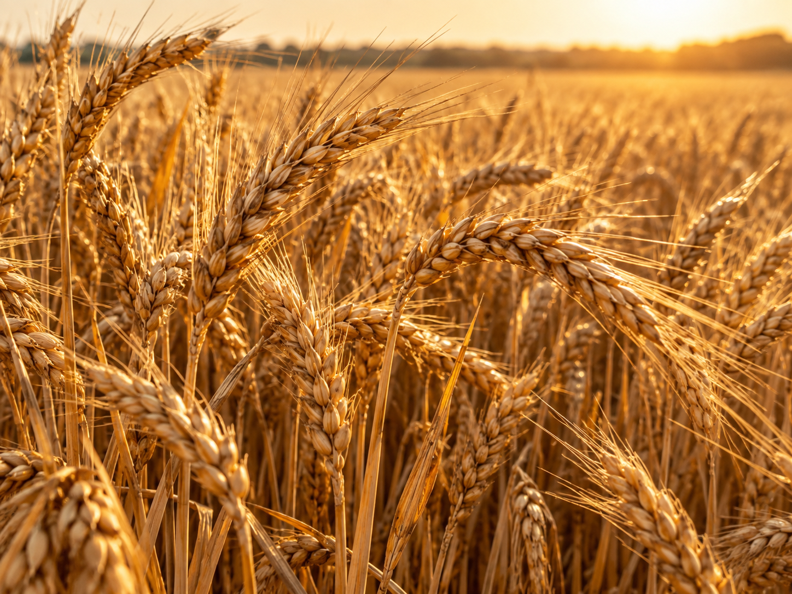
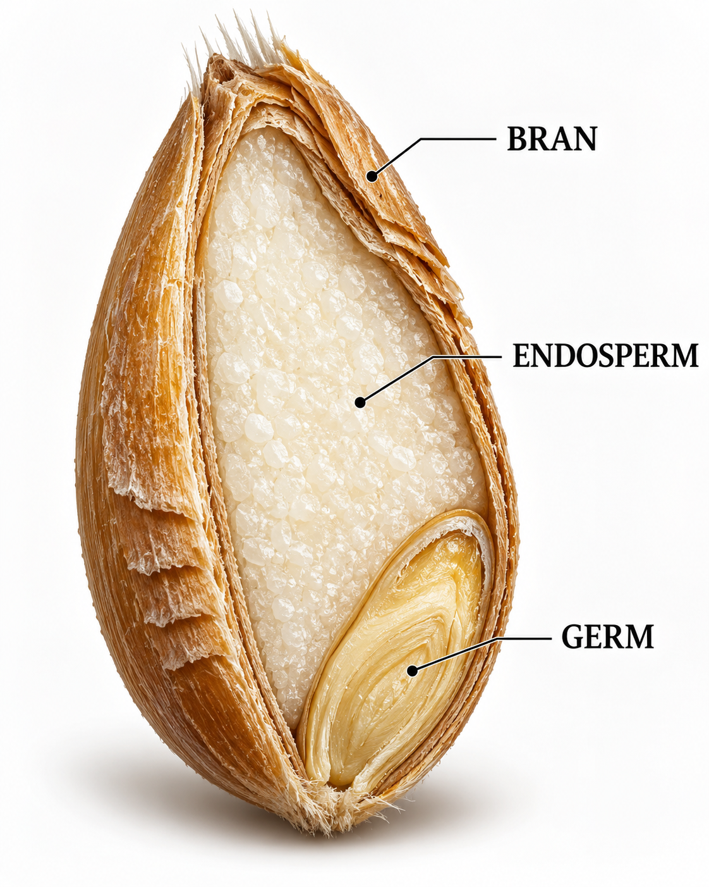
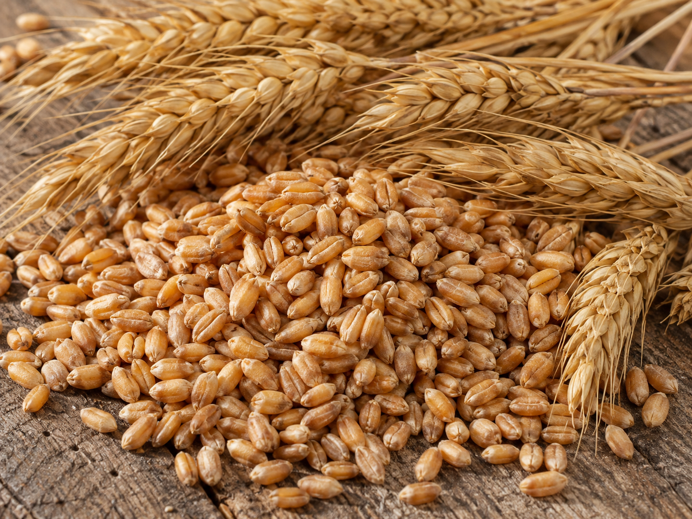

01
Roots
Fibrous roots absorb water and nutrients while anchoring the plant in the soil.
A DOCUMENTARY ABOUT THE WORLD'S GOLDEN GRAIN
Wheat has fed societies for thousands of years. Explore its origin, biology, farming journey, food value and its place in human history.

Wheat field at maturityWheat is more than a crop. It is one of the plants that helped people move from hunting and gathering toward settled agriculture.
Early forms of wheat were domesticated in Southwest Asia. Over many generations, farmers selected plants with larger grains, stronger seed heads and traits that made harvesting easier.
Today, wheat is milled into flour and used in bread, pasta, noodles, pastries, breakfast foods and many other products.
“Every loaf of bread carries a long story of seed, soil, climate, farming and human ingenuity.”
Wheat belongs to the grass family, Poaceae — the same family as rice, maize, barley and oats.
Fibrous roots absorb water and nutrients while anchoring the plant in the soil.
The upright stem, called a culm, supports the leaves and developing wheat head.
Long narrow leaves capture sunlight and manufacture energy through photosynthesis.
The wheat head contains spikelets, where flowers develop and eventually produce kernels.
Seeds are planted at a suitable depth and spacing, with timing chosen for climate and variety.
With enough moisture and suitable temperature, the seed begins active growth.
Wheat develops additional stems called tillers, increasing its potential number of grain heads.
The wheat head emerges and flowers are pollinated, beginning the formation of grain.
Photosynthesis supplies carbohydrates that accumulate inside developing kernels.
When kernels reach maturity and appropriate moisture, the crop is harvested and stored.
Water, minerals, carbon dioxide and solar energy are transformed through plant biology into food.

The protective outer layers, naturally rich in dietary fibre and several micronutrients.
The largest portion of the kernel, containing mostly starch and storage proteins.
The embryo of the seed, containing fats, proteins, vitamins and minerals needed for new growth.
Wheat cultivation reaches back thousands of years into early agriculture.
Its relatives include maize, rice, barley, oats, millet and sugarcane.
Wheat connects farmers, millers, bakers, traders and consumers across the world.
